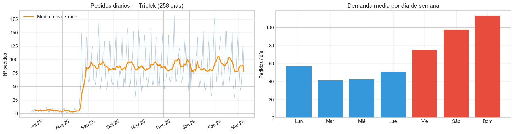
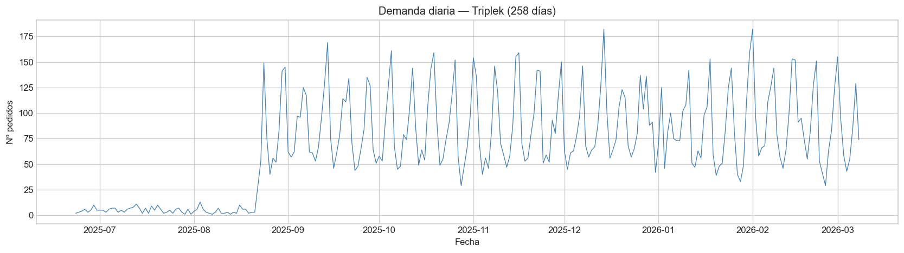
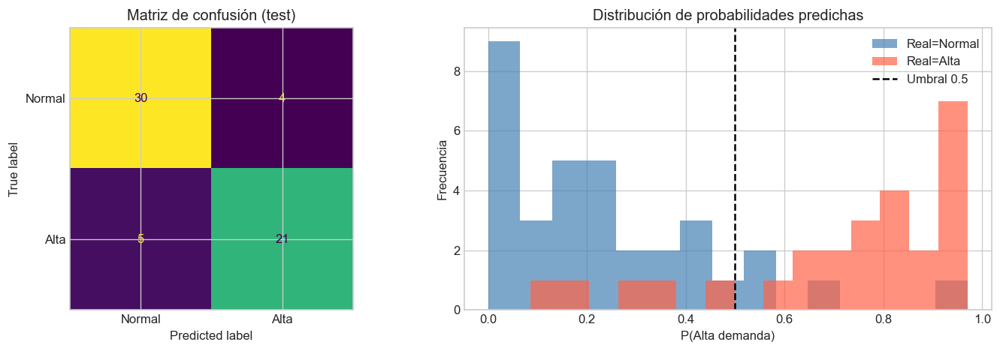
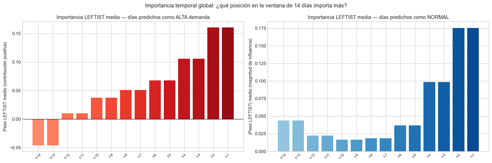

Gianfranco Caschetto — Máster en Inteligencia Artificial, UCM (2025/26)
6.2 Resumen
Este capítulo usa TSInterpret para explicar un clasificador de demanda diaria en Triplek, una cadena de comida rápida en Venezuela. Con ventanas de 14 días de pedidos, el modelo predice si el día siguiente será de alta demanda o normal. El histórico real del CSV cubre 258 días (junio 2025 – marzo 2026). El clasificador es un Random Forest; las explicaciones combinan LEFTIST y contrafactuales NUN-CF.
6.3 1. Introducción
6.3.1 Explicar series temporales
SHAP, LIME o PDP asumen tablas: una fila, un vector de variables. En una serie el orden importa y la pregunta pasa a ser qué instantes del pasado condicionan la predicción.
TSInterpret está pensado para eso. LEFTIST, TSEvo o NativeGuide devuelven importancia por timestep, no por columnas sueltas.
6.3.2 Clasificación de demanda
Triplek registra pedidos por día. Modelamos si el día siguiente será de alta demanda o normal a partir de los 14 anteriores. \1
Entrada: últimos 14 días de pedidos
Salida: alta demanda (sí / no)
6.3.3 Datos
La exportación tiene 17.582 pedidos en 258 días con actividad (23-jun-2025 a 08-mar-2026). Eso da unas 244 ventanas deslizantes; reservamos las últimas 60 para test.
Código
# pip install -r requirements.txt (tsinterpret y dependencias)import os, types, warningswarnings.filterwarnings('ignore')import numpy as npimport pandas as pdimport matplotlib.pyplot as pltimport matplotlib.dates as mdatesimport matplotlib.colors as mcolorsimport seaborn as snsimport statsmodels.api as smfrom sklearn.ensemble import RandomForestClassifierfrom sklearn.metrics import classification_report, confusion_matrix, ConfusionMatrixDisplayfrom sklearn.metrics.pairwise import euclidean_distancesfrom TSInterpret.InterpretabilityModels.leftist.leftist import LEFTISTos.makedirs('figuras', exist_ok=True)try: plt.style.use('seaborn-v0_8-whitegrid')exceptOSError: plt.style.use('ggplot')plt.rcParams['figure.dpi'] =120RANDOM_STATE =42np.random.seed(RANDOM_STATE)print('Entorno listo.')
Entorno listo.
6.4 2. Datos
6.4.1 Pedidos
La fuente es el sistema interno de una hamburgueserías (La Viña y Centro). El CSV anonimizado incluye 17.582 pedidos entre junio de 2025 y marzo de 2026. Agregamos por día la variable n_orders.
6.4.2 Anonimización
Se quitaron teléfono, nombre, correo y dirección. order_id es un índice secuencial.
Código
df = pd.read_csv('data/triplekb-orders-anonymized.csv')df['order_date'] = pd.to_datetime(df['order_date'])daily = ( df.groupby('order_date')['order_id'] .count() .reset_index() .rename(columns={'order_id': 'n_orders'}) .sort_values('order_date') .reset_index(drop=True))series_all = daily['n_orders'].values.astype(float)date_idx = daily['order_date']print(f'Pedidos en exportación: {len(df):,}')print(f'Días con demanda registrada: {len(daily)}')print(f'Rango: {daily["order_date"].min().date()} → {daily["order_date"].max().date()}')print('\nPedidos por día (resumen):')print(daily['n_orders'].describe().round(1).to_string())
Pedidos en exportación: 17,582
Días con demanda registrada: 258
Rango: 2025-06-23 → 2026-03-08
Pedidos por día (resumen):
count 258.0
mean 68.1
std 47.5
min 1.0
25% 40.0
50% 64.0
75% 99.5
max 182.0
6.4.3 Exploración: serie diaria y día de la semana
Código
fig, axes = plt.subplots(1, 2, figsize=(15, 4))ax = axes[0]ax.plot(daily['order_date'], daily['n_orders'], alpha=0.4, color='steelblue', lw=0.8)roll = daily.set_index('order_date')['n_orders'].rolling(7).mean()ax.plot(roll.index, roll.values, color='darkorange', lw=2, label='Media móvil 7 días')ax.set_title(f'Pedidos diarios — Triplek ({len(daily)} días)')ax.set_ylabel('Nº pedidos')ax.legend()ax.xaxis.set_major_formatter(mdates.DateFormatter('%b %y'))ax.xaxis.set_major_locator(mdates.MonthLocator())plt.setp(ax.get_xticklabels(), rotation=30)ax2 = axes[1]dias_es = ['Lun', 'Mar', 'Mié', 'Jue', 'Vie', 'Sáb', 'Dom']por_dia = daily.assign(dow=daily['order_date'].dt.dayofweek).groupby('dow')['n_orders'].mean()colors = ['#e74c3c'if i >=4else'#3498db'for i inrange(7)]ax2.bar(dias_es, por_dia.values, color=colors)ax2.set_title('Demanda media por día de semana')ax2.set_ylabel('Pedidos / día')plt.tight_layout()plt.savefig('figuras/01_eda.png', dpi=150, bbox_inches='tight')plt.show()print(f'Mayor media semanal: {dias_es[por_dia.idxmax()]} ({por_dia.max():.1f} pedidos/día)')

Mayor media semanal: Dom (113.2 pedidos/día)
En la figura 1, a la izquierda se ve la serie diaria con la media móvil de una semana en naranja. \1suaviza el ruido y deja claro que hay ondas repetidas cada pocos días. A la derecha, el domingo se lleva la mayor media (unos 113 pedidos), casi el doble que un día entre semana. Por eso tiene sentido mirar dos semanas hacia atrás cuando predecimos el día siguiente.
6.5 3. Serie de demanda diaria
Revisamos tendencia y estacionalidad semanal con descomposición aditiva (periodo 7) sobre los 258 días reales agregados del CSV.
Serie de demanda: 258 días | media=68.1 | std=47.4

La figura 2 recorre los 258 días completos. Hay mucha dispersión (desde días casi vacíos hasta picos de más de 180 pedidos) y un ritmo que se repite: subidas en fin de semana y bajadas en entre semana. No parece una tendencia lineal fuerte en nueve meses; si hubiera estacionalidad anual, harían falta más años para verla con calma.
6.6 4. Ventanas y etiquetas
Cada instancia usa 14 días como entrada y el día siguiente como objetivo. La etiqueta alta demanda es el tercio superior de pedidos/día (percentil 67 calculado en el histórico). \1
WINDOW =14# 2 semanas de pasadodef create_windows(series, w): X, y = [], []for i inrange(w, len(series)): X.append(series[i-w:i]) y.append(series[i])return np.array(X), np.array(y)X_all, y_reg = create_windows(series_all, WINDOW)# Umbral de clasificación: percentil 67 (≈ top tercio)THRESHOLD = np.percentile(y_reg, 67)y_clf = (y_reg >= THRESHOLD).astype(int)print(f"Instancias creadas: {X_all.shape[0]}")print(f"Umbral ALTA demanda: {THRESHOLD:.0f} pedidos/día")print(f"Distribución: {y_clf.mean():.1%} días ALTA | {1-y_clf.mean():.1%} días NORMAL")# Split temporal: últimas 60 instancias como testSPLIT =len(X_all) -60X_train_2d, X_test_2d = X_all[:SPLIT], X_all[SPLIT:]y_train, y_test = y_clf[:SPLIT], y_clf[SPLIT:]# Formato 3D para TSInterpret: (n, time, 1)X_train_3d = X_train_2d.reshape(-1, WINDOW, 1)X_test_3d = X_test_2d.reshape(-1, WINDOW, 1)print(f"\nTrain: {len(X_train_2d)} instancias")print(f"Test: {len(X_test_2d)} instancias")print(f"Forma TSInterpret: {X_train_3d.shape}")
Instancias creadas: 244
Umbral ALTA demanda: 88 pedidos/día
Distribución: 34.0% días ALTA | 66.0% días NORMAL
Train: 184 instancias
Test: 60 instancias
Forma TSInterpret: (184, 14, 1)
6.7 5. Modelo
Random Forest (200 árboles, profundidad 8). Se entrena en (n, 14); para LEFTIST envolvemos predict_proba para aceptar (batch, 14, 1).
=== Evaluación en test ===
precision recall f1-score support
Normal (0) 0.86 0.88 0.87 34
Alta (1) 0.84 0.81 0.82 26
accuracy 0.85 60
macro avg 0.85 0.85 0.85 60
weighted avg 0.85 0.85 0.85 60

En la figura 3, la matriz de la izquierda resume el test: 51 aciertos de 60 (85 %). Falla un poco más en días altos (21 de 26) que en normales (30 de 34). A la derecha, las probabilidades se separan bastante bien: los normales quedan con P(alta) baja y los altos se acercan a 1, aunque en el centro hay mezcla y ahí salen los errores.
6.8 6. Explicaciones con TSInterpret
Usamos dos vías. \1 | Método | Qué responde | |——–|—————-| | LEFTIST | Qué días del pasado empujaron la clase predicha | | NUN-CF (manual) | Qué ventana del train de la otra clase se parece más |
En la versión 0.4.7 de TSInterpret, TSEvo, COMTECF y NativeGuideCF fallan con Python 3.12 y backends sklearn; NUN-CF lo implementamos a mano siguiendo Delaney et al. (2021).
6.8.1 6.1 LEFTIST
LEFTIST segmenta la ventana, perturba cada tramo (media del segmento) y estima contribución con LIME. El mapa positivo favorece alta demanda; el negativo, normal.
Corrección local en _shape_explanations (v0.4.7): values_per_slice debe ser len(series) // nb_interpretable_feature, no nb_interpretable_feature. Patch con types.MethodType sin tocar el paquete instalado.
Código
# Función de predicción compatible con el formato 3D de TSInterpret# TSInterpret pasa (batch, time, feat); sklearn necesita (batch, time*feat)def predict_fn(item):return clf.predict_proba(item.reshape(item.shape[0], -1))# Verificacióntest_batch = X_test_3d[:3]proba = predict_fn(test_batch)print(f"predict_fn: {test_batch.shape} → {proba.shape} ✓")# ── Patch del bug de _shape_explanations ──────────────────────────────────N_SEGMENTS =7# 7 segmentos de 2 días cada uno (14 días / 7 = 2)def fixed_shape_explanations(self, explanations, series):"""Corrige values_per_slice = len(series) // nb_interpretable_feature.""" n_seg =self.nb_interpretable_feature seg_size =max(1, len(series) // n_seg) heatmaps = []for i inrange(len(explanations)): heatmap = np.zeros(len(series)) j =0for value in explanations[i][0]: end =min(j + seg_size, len(heatmap)) heatmap[j:end] =float(value) j = endif j >=len(heatmap):break heatmaps.append(heatmap)return heatmaps# Inicializar LEFTISTleftist = LEFTIST( model=predict_fn, data=(X_train_3d, y_train), mode='time', backend='F', # F = función directa (no SK/TF/PYT) nb_interpretable_feature=N_SEGMENTS, transform_name='mean', # perturba reemplazando segmento con su media learning_process_name='Lime', nb_neighbors=1000, explanation_size=N_SEGMENTS, # retorna peso para todos los segmentos)# Aplicar patchleftist._shape_explanations = types.MethodType(fixed_shape_explanations, leftist)print("LEFTIST inicializado con patch aplicado.")
predict_fn: (3, 14, 1) → (3, 2) ✓
The Predict Function was given directly
LEFTIST inicializado con patch aplicado.
Código
def plot_leftist_heatmap(ax, instance_2d, heatmap, pred_class, true_class, title='', window=14, threshold=THRESHOLD):"""Visualiza la ventana temporal con heatmap LEFTIST superpuesto.""" timesteps = np.arange(window) labels = [f't-{window-i}'for i inrange(window)]# Heatmap de fondo (colores) — TwoSlopeNorm requiere vmin < 0 < vmax h_min, h_max = heatmap.min(), heatmap.max()if h_max <=0: norm = mcolors.Normalize(vmin=h_min, vmax=0)elif h_min >=0: norm = mcolors.Normalize(vmin=0, vmax=max(h_max, 1e-9))else: norm = mcolors.TwoSlopeNorm(vmin=h_min, vcenter=0, vmax=h_max) cmap = plt.cm.RdYlBu_r# Barras de importancia en el fondofor t inrange(window): color = cmap(norm(heatmap[t])) ax.axvspan(t -0.5, t +0.5, alpha=0.4, color=color, zorder=1)# Serie temporal ax.plot(timesteps, instance_2d, 'o-', color='black', lw=1.5, ms=5, zorder=3)# Línea de umbral ax.axhline(threshold, color='red', ls='--', lw=1, alpha=0.8, label=f'Umbral ALTA={threshold:.0f}') ax.set_xticks(timesteps) ax.set_xticklabels(labels, rotation=45, fontsize=8) ax.set_ylabel('Pedidos/día') ax.legend(fontsize=8, loc='upper left') clase_pred ='ALTA'if pred_class ==1else'NORMAL' clase_real ='ALTA'if true_class ==1else'NORMAL' color_title ='darkred'if pred_class ==1else'steelblue' ax.set_title(f'{title}\nPredicción: {clase_pred} | Real: {clase_real}', fontsize=10, color=color_title)# Colorbar sm_cb = plt.cm.ScalarMappable(cmap=cmap, norm=norm) sm_cb.set_array([]) plt.colorbar(sm_cb, ax=ax, label='Importancia LEFTIST', pad=0.01, shrink=0.8)print("Función de visualización definida.")
Función de visualización definida.
6.8.2 6.1.1 Casos locales
Cuatro ejemplos del test bien clasificados: dos alta y dos normal.
La figura 4 muestra cuatro casos del test bien clasificados. En cada panel, la línea negra es la ventana de 14 días y el fondo de color es LEFTIST: rojo empuja hacia alta, azul hacia normal. Cuando el modelo acierta un día alto, suele pintar fuerte los últimos días de la ventana; cuando acierta un normal, el mapa es más repartido o inclina al azul en esos mismos lags.
6.8.3 6.2 Importancia agregada
LEFTIST en cada acierto del test; promediamos heatmaps por clase predicha para ver qué lags importan en conjunto.
Código
# Calcular LEFTIST sobre todas las instancias del test correctamente clasificadascorrect_idx = np.where(y_pred == y_test)[0]print(f"Instancias correctamente clasificadas en test: {len(correct_idx)}")heatmaps_alta = []heatmaps_normal = []for idx in correct_idx: inst_3d = X_test_3d[idx:idx+1] pc =int(y_pred[idx]) exp = leftist.explain(inst_3d, idx_label=pc) h = exp[0]if pc ==1: heatmaps_alta.append(h)else: heatmaps_normal.append(np.abs(h)) # |valor| para instancias NORMALmean_alta = np.mean(heatmaps_alta, axis=0) if heatmaps_alta else np.zeros(WINDOW)mean_normal = np.mean(heatmaps_normal, axis=0) if heatmaps_normal else np.zeros(WINDOW)print(f" Instancias ALTA analizadas: {len(heatmaps_alta)}")print(f" Instancias NORMAL analizadas: {len(heatmaps_normal)}")# Visualizaciónlag_labels = [f't-{WINDOW-i}'for i inrange(WINDOW)]x = np.arange(WINDOW)fig, axes = plt.subplots(1, 2, figsize=(15, 5))ax1 = axes[0]ax1.bar(x, mean_alta, color=plt.cm.Reds(np.linspace(0.4, 0.9, WINDOW)))ax1.set_xticks(x); ax1.set_xticklabels(lag_labels, rotation=45, fontsize=8)ax1.set_title('Importancia LEFTIST media — días predichos como ALTA demanda', fontsize=11)ax1.set_ylabel('Peso LEFTIST medio (contribución positiva)')ax1.axhline(0, color='black', lw=0.8)ax2 = axes[1]ax2.bar(x, mean_normal, color=plt.cm.Blues(np.linspace(0.4, 0.9, WINDOW)))ax2.set_xticks(x); ax2.set_xticklabels(lag_labels, rotation=45, fontsize=8)ax2.set_title('Importancia LEFTIST media — días predichos como NORMAL', fontsize=11)ax2.set_ylabel('|Peso LEFTIST| medio (magnitud de influencia)')ax2.axhline(0, color='black', lw=0.8)plt.suptitle('Importancia temporal global: ¿qué posición en la ventana de 14 días importa más?', fontsize=12)plt.tight_layout()plt.savefig('figuras/05_leftist_global.png', dpi=150, bbox_inches='tight')plt.show()# Insighttop_alta = np.argmax(mean_alta)print(f"\nEn alta demanda, el lag con más peso medio suele ser t-{WINDOW - top_alta}.")
Instancias correctamente clasificadas en test: 51
Instancias ALTA analizadas: 21
Instancias NORMAL analizadas: 30

Insight: para días ALTA, el timestep más influyente es t-2
→ Los días más recientes en la ventana tienen mayor peso en predecir alta demanda.
La figura 5 promedia LEFTIST en los aciertos del test. Para predicciones de alta (izquierda), pesan sobre todo t-1 a t-4: lo que pasó esta semana y la anterior corta condiciona mucho el siguiente día. En normales (derecha) el patrón es más plano, pero también gana importancia hacia el final de la ventana. Encaja con que la serie tenga memoria corta y ciclo semanal.
En los días etiquetados como alta, el lag que más repite es t-2.
6.8.4 6.3 Contrafactuales NUN-CF
Dado un caso predicho como alta, buscamos en train la ventana etiquetada normal más cercana en distancia euclídea. Esa ventana es el «pasado alternativo» más parecido que llevaría a la otra clase según el vecino guardado en entrenamiento.
La figura 6 compara cada caso predicho como alta (línea roja) con el vecino de entrenamiento más parecido pero etiquetado como normal (azul discontinua). La zona gris es la diferencia; la flecha verde marca el día donde más cambia el valor. No hace falta reescribir toda la quincena: a veces bastan uno o dos días distintos para que el modelo cambie de opinión, en la misma línea que LEFTIST marca los lags recientes.
Código
print('Contrafactuales NUN-CF — casos alta bien clasificados:')print(f"{'idx':>4} | {'media orig':>10} | {'media CF':>8} | {'Δ media':>8} | timesteps con más cambio")print('-'*65)todos_alta = np.where((y_pred ==1) & (y_test ==1))[0]for idx in todos_alta[:8]: inst = X_test_2d[idx] cf, _ = nun_cf(X_train_2d, y_train, inst, 1) delta = cf - inst top_change = np.argsort(np.abs(delta))[-2:][::-1] dias_key =', '.join([f't-{WINDOW - d}'for d in top_change])print(f'{idx:>4} | {inst.mean():>10.1f} | {cf.mean():>8.1f} | {delta.mean():>+8.1f} | {dias_key}')
LEFTIST y NUN-CF coinciden en que pesan más los días recientes de la ventana. La clasificación de picos se parece a una racha: varios días altos seguidos empujan la predicción; un día flojo reciente puede bajarla. En NUN-CF los cambios mayores suelen concentrarse en los mismos lags que marca LEFTIST, aunque el vecino contrafactual no siempre implica bajar todos los días recientes.
6.9 7. Conclusiones
El Random Forest alcanza unos 85 % de accuracy en el test (recall alta ~0,71). Las explicaciones apuntan a inercia en los últimos dos o cuatro días. Los contrafactuales suelen acercarse a ventanas con menos pedidos en ese tramo reciente.
Operativamente, sirve como alerta de continuidad de demanda, no como cifra exacta de pedidos.
Sobre TSInterpret: LEFTIST funciona bien con el patch; los contrafactuales nativos dieron problemas en nuestro entorno y por eso NUN-CF quedó manual.
Limitaciones: al binarizar se pierde matices entre 89 y 120 pedidos; no hay calendario de feriados ni cortes de luz; el umbral global no se recalcula por sucursal.
Trabajo futuro: probar LSTM/CNN con NativeGuide, clases baja/media/alta, y estabilidad de las explicaciones si se reentrena el bosque.
6.10 8. Referencias
Guillemé, M., et al. (2019). Agnostic local explanation for time series classification. IEEE ICTAI.
Höllig, J., et al. (2022). TSEvo: Evolutionary Counterfactual Explanations for Time Series Classification. IEEE ICMLA.
Delaney, E., Greene, D., & Keane, M.T. (2021). Instance-Based Counterfactual Explanations for Time Series Classification. ICCBR.
Ribeiro, M.T., Singh, S., & Guestrin, C. (2016). “Why Should I Trust You?”: Explaining the Predictions of Any Classifier. KDD.
Höllig, J. et al. (2023). TSInterpret: A Python Package for the Interpretability of Time Series Classification. SoftwareX.
Biecek, P., & Burzykowski, T. (2021). Explanatory Model Analysis. Chapman and Hall/CRC.
Molnar, C. (2022). Interpretable Machine Learning (2nd ed.).